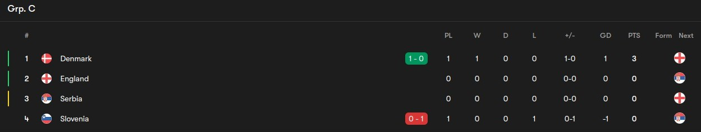

Group C Review
Table of Contents
Group Review - Group C

The group with Boregate involved. I’m writing this in the middle of Denmark’s game but I’ll get the rest done soon so it will be out eventually. Let’s get into the teams.
England
Probably the one team that’s very nailed on to top this group. Denmark and Serbia could be potential banana skins but with the quality they’ve got they should top it. If we don’t…well with my history with Boregate you know where I’m gonna go.
Denmark
You’ve got a really solid team here. Eriksen is back at another Euros after what happened last time out. You’ve got Hojlund leading the line as well after a great debut season at United. You’ve got a solid midfield too with Hojberg and Hjulmand(Solid season with Sporting) and a defense with the likes of Christensen, Anderson and so on. They should be good at 2nd if they can stand firm and create the chances which I know they can
Serbia
A wildcard whenever they’re present. They have the players don’t get me wrong like SMS, Tadic and so on and now Vlahovic also is back. They can cause some damage if they aren’t kept quiet. Let’s see how they perform. Maybe they’re a good shout for the 3rd placed teams
Slovenia
Oblak and Sesko. Apart from them you don’t see any major talent for them. If Sesko is kept quiet, you don’t see anyone else who can cause problems. They just need a bit more quality to hurt any of the other teams here honestly.
My picks 1-4
- England
- Denmark
- Serbia
- Slovenia